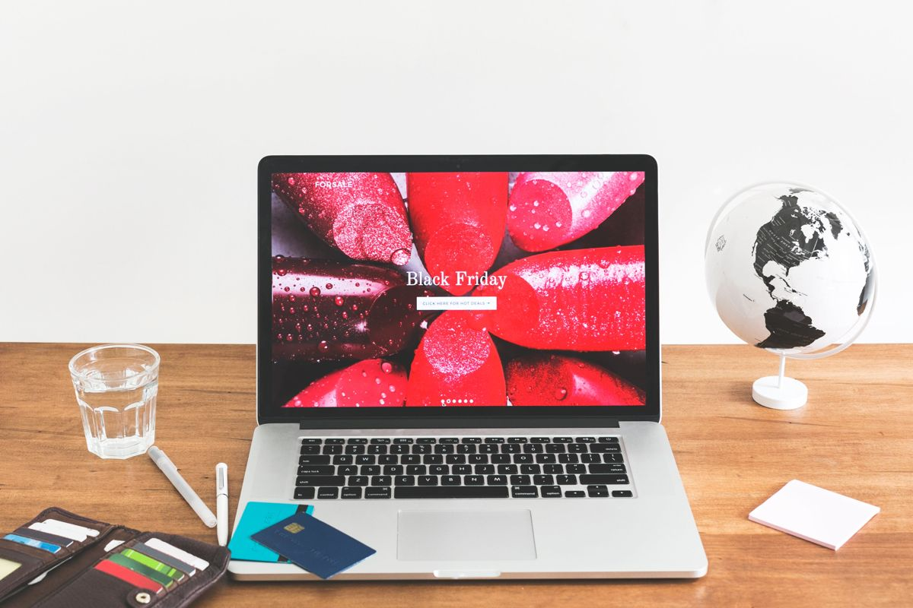
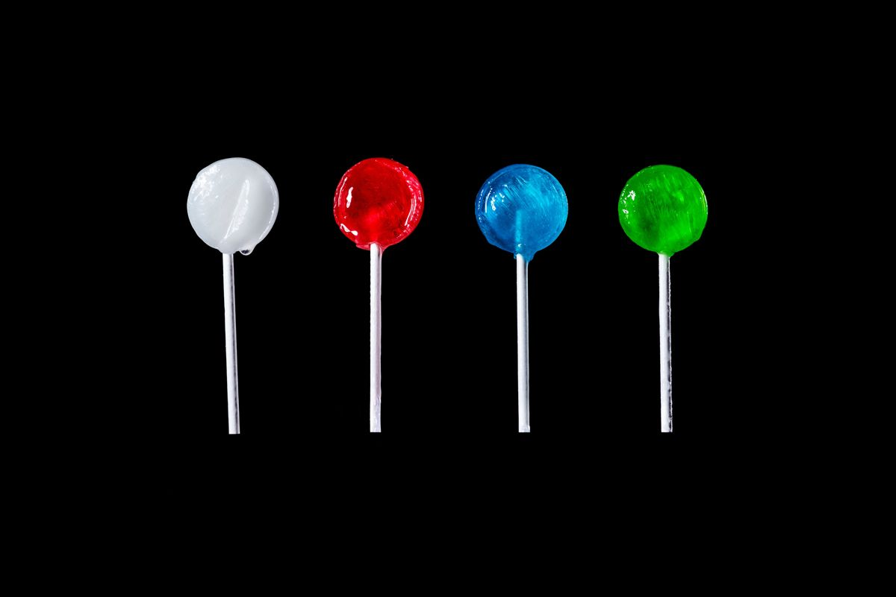
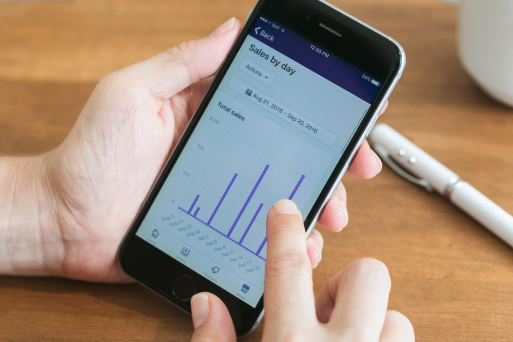

Before
After
Hero focus
We rebuild your existing site into a cleaner, sharper, more trustworthy one — as HTML that stays under your control.
Same content, different execution — spacing, hierarchy, and where the eye lands first.
Reduce noise. Increase clarity. Make the page feel deliberate from the first glance.
The opening view should answer three things instantly: what it is, who it’s for, and what happens next. A redesign works when the page reads in seconds — no guesswork required.

People don’t convert when they’re confused. The layout should reduce decisions and remove dead ends: fewer competing buttons, fewer mixed messages, fewer distractions near the primary action.
Trust comes from consistency: type scale, spacing rhythm, alignment, and restrained color. When the interface feels controlled, the brand feels reliable.

A strong brand isn’t just a logo — it’s repeated decisions. A redesign strengthens identity by making components feel like they belong together: buttons, cards, headings, and spacing all speaking one language.
Cleaner structure makes pages easier to understand — for humans and for search engines. Strong headings, clear sections, and accessible markup help content perform without gimmicks.

Two sample sites, each shown before and after. Click, and watch the layout change.
Three steps: share your site, we rebuild the layout, you get clean HTML back.
Provide a link or the current HTML.
Improve hierarchy, spacing, and readability.
HTML/CSS that can be hosted anywhere and maintained easily.
Clean structure first. Visual polish second. Always readable.
Start with your most important page — upgrade the presentation, keep the control.
Get started ↗